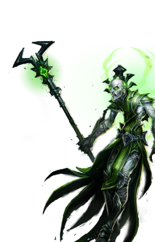

Некрополис
Некроманты появились на свет как секта магов, а превратились в итоге в могучую нацию. Они поклоняются Смерти – одному из ликов Асхи. Их восприятие темной стороны богини сродни фанатизму, их интересует лишь смерть и состояние нежизни, к которому стремятся все некроманты. Они изучают Магию Смерти для того, чтобы обрести вечную жизнь; они научились повелевать духами умерших (призраками), познали науку оживления мертвых (скелетов, зомби).
Другие имена: некроманты, нежить, победители смерти.
Основные цвета: черный, белый, флуоресцентный (ядовитый) зеленый
Страна/Королевство: Эриш, Долина Праха
Столица: Аль-Бетиль, Черный Камень, затем – Нар-Анкар, Плачущая Игла
Религия
Некроманты поклоняются Асхе, Изначальному Дракону Порядка, вернее, ее искаженной ипостаси – «Смерти». Некроманты отвергают Хаос и беспорядок, а значит, отвергают эмоции, желания и даже саму жизнь. Их агрессивное стремление к Порядку и покою привело их к попытке взять под контроль само время, дабы смерть стала началом нового бытия, которым они могли бы управлять. Лишь самые достойные годятся для этой не-жизни, а другим суждено стать, в лучшем случае, покорными слугами, в худшем же – пешками, обреченными на вечное страдание.
Магия
Некроманты, как и все адепты Сар-Илама, считают драконов не богами, а скорее просвещенными сущностями и могущественными духовными символами.
Они верят, что магия живет внутри них, и извлечь ее можно лишь исповедуя строжайшую дисциплину, путем трудоемких изысканий и изучения тайного знания (в основном – учения Сар-Илама).
Как уже было сказано, они почитают Ахсу, поклонение это имеет религиозную природу и является объектом споров между ними и их некогда собратьями – магами. Некроманты выбирают Изначальную Магию, дающую им силу управлять временем, пространством и духом. Из элементалей они предпочитают порождения тьмы и земли, из сочетания которых с прислуживающей им нежитью иногда получаются любопытнейшие комбинации.
Для общения с душами умерших они создали собственную темную магию, которую так и называют – некромантией.